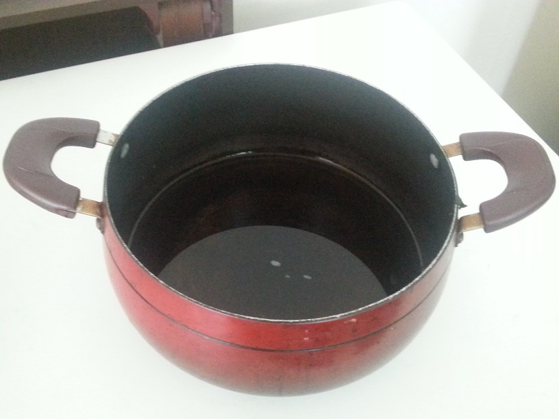
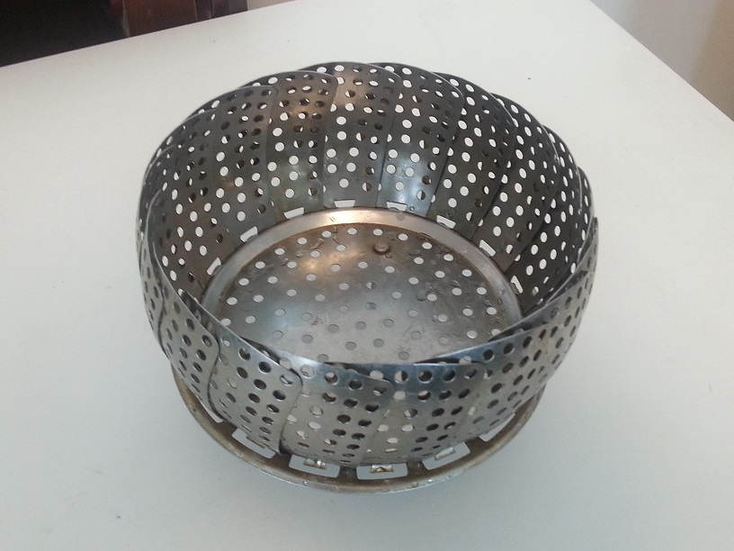
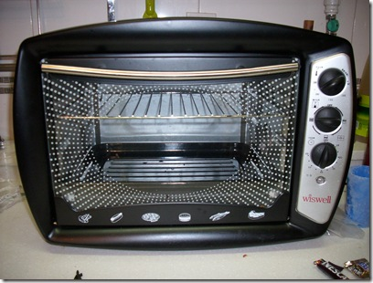
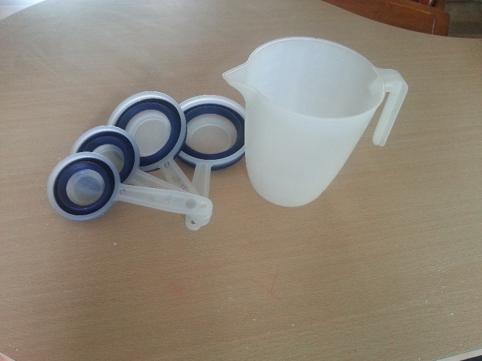

Here are pictures of some things I use, where to get them (if you can) as well as some uses that I have found for them.
Standard Pot

Aside from all the "normal" uses I find that a big pot is useful for steaming. If
you do not have an oven, fear not! Baking can still be done with a big pot and a steamer insert (below).
Steamer Insert

Found at : Daiso, Homeplus, Emart, local stores.
Uses : "baking", steaming vegetables.
Mixing Bowls
picture to come.
Found at : Daiso, Homeplus, Emart, local stores.
Oven

Pretty much need to get this one online.
Convection oven ~ $90.00
Found at : GMarket
Note: convection ovens cook food in about half the time as conventional ovens so watch your food carefully.
Rice Cooker
Also good for baking if you don't have an oven.
Found at : Homeplus, Emart and some local marts.
Unless you are looking for a rice cooker that has all the bells and whistles and costs $100+, you may want to look online.
Pastry Blender
YOU CANNOT FIND THIS IN KOREA! BRING ONE FROM HOME IF YOU NEED IT.
Measuring Cup Set

Good sets are difficult to find, click the image to see a bigger picture.
Though Baking seems like it's trying to catch on in Korea, it is still pretty hard to find a good set.
We brought the set of cups from America, the small pitcher is what is most commonly found in Korea.
Found at : Homeplus, Daiso

{kind=link}